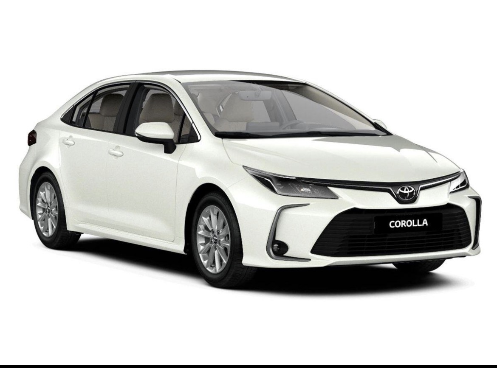
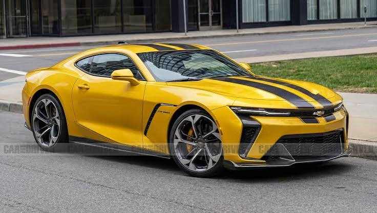

Toyota Corolla Sedã
"Vende-se Toyota Corolla Sedã em estado de novo. Veículo de único dono, com histórico completo de revisões em concessionária e excelente conservação.".

"Vende-se Toyota Corolla Sedã em estado de novo. Veículo de único dono, com histórico completo de revisões em concessionária e excelente conservação.".

Este Chevrolet Camaro é perfeito para entusiastas que buscam status, presença marcante e a emoção pura da tração traseira com o ronco clássico do motor V8. É o modelo ideal para quem deseja um veículo esportivo de alta performance para curtir finais de semana e momentos de lazer com estilo único..

A Ferrari é excelente para entusiastas de carros, colecionadores de alto poder aquisitivo e motoristas que buscam o ápice da performance, design e status social.